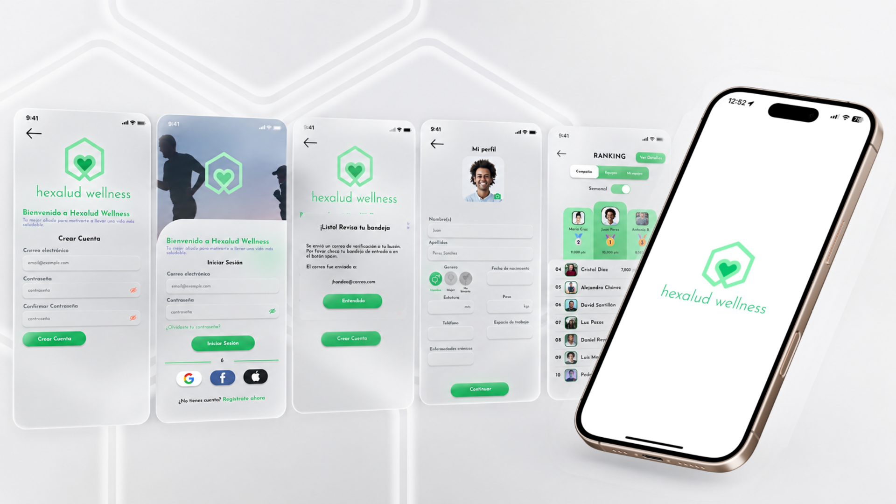

Bienestar Corporativo · Startup
Hexalud
Wellness
Una startup que convierte el movimiento en recompensas
Hexalud Wellness es una plataforma de bienestar corporativo que fomenta hábitos saludables mediante gamificación y recompensas. Los usuarios acumulan puntos realizando actividad física —caminar, hacer ejercicio— que pueden canjear por descuentos, cupones y beneficios de empresas colaboradoras.
El objetivo era transformar una acción cotidiana en una experiencia motivadora y tangible: actividad física → puntos → progreso → recompensas → motivación para continuar. Me incorporé en 2021 como Customer Service y mi rol evolucionó progresivamente hacia diseño gráfico, UX/UI e innovación de producto.
"Trabajar desde Customer Service me permitió escuchar directamente a los usuarios, identificar sus fricciones y trasladar esos aprendizajes al diseño de las experiencias digitales — una perspectiva que pocas veces tiene un diseñador desde el primer día."
Diseñar en una startup en constante transformación
Hexalud era una startup en crecimiento activo. Durante mi etapa el producto pasó por diferentes fases y tuvo tres cambios de nombre hasta su denominación actual. El principal reto era diseñar en un entorno donde el producto, la marca y las necesidades del negocio evolucionaban rápidamente.
El equipo trabajaba en dinámica Agile, con Jira para el seguimiento de tareas y reuniones semanales para revisar avances, prioridades y próximos pasos. Esto exigía adaptabilidad constante, capacidad de priorizar y entregar valor en ciclos cortos.
El flujo central del producto
Actividad física
El usuario camina, corre o hace ejercicio. La app registra sus pasos y actividad en tiempo real.
Acumulación de puntos
Cada meta alcanzada se traduce en puntos dentro de la plataforma, visibles en tiempo real con feedback positivo.
Progreso y gamificación
El usuario ve su progreso, logros y posición dentro de la comunidad. La gamificación mantiene el engagement.
Recompensas reales
Los puntos se canjean por descuentos, cupones y beneficios de empresas colaboradoras — motivación tangible para continuar.
Diseño transversal a lo largo de 3 años
Mi participación fue transversal y evolutiva. Empecé como Customer Service, lo que me dio una perspectiva única sobre las necesidades reales de los usuarios. A medida que mi rol evolucionó, pude incorporar esos aprendizajes directamente al diseño de la experiencia.
El foco principal estuvo en el diseño UX/UI de la aplicación móvil, pero participé en todo el espectro: desde wireframes y prototipos hasta la evolución de la identidad visual y los recursos de comunicación de la marca.
App móvil UX/UI
Diseño de interfaces, flujos y evolución de pantallas
Wireframes & Prototipos
Baja y alta fidelidad, interacción y navegación
UX Tracking
Seguimiento de la experiencia y optimización de retención
Plataforma web
Prototipado de baja fidelidad de la plataforma
Identidad visual
Evolución de la marca a través de sus diferentes etapas
Comunicación visual
Banners, infografías, presentaciones y recursos digitales
Piezas seleccionadas